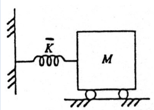

Oscillators & State Space Systems
Modal Analysis
Oscillators are coupled mass/spring, pendulums, etc systems, which can be analysed using modal analysis:
- Start with a complex coupled system
- Use spectral decomposition to diagonalise the system into simpler uncoupled systems
- Solve for each system
Single Degree of Freedom Oscillators
Mass-Spring

The equation of motion is:
where is the normalised stiffness, . Assuming an oscillatory solution:
Solving for by substituting back in gives .
Setting and :
This system oscillates at a single frequency, .
Pendulum
The equation of motion for a pendulum in the tangential direction is:

Where
- The system oscillates at the frequency
- This system has the same form, and therefore solution, as the mass-spring.
- The frequency depends only on the length, not the mass, a property unique to pendulums.
Multiple Degrees of Freedom
This single degree of freedom can be generalised to a 2nd order -degree of freedom system:
- is an matrix
- is an -dimensional column vector
The goal is to find frequencies such that the solution can be expressed as harmonic functions of . This is done by spectral decomposition:
Introduce a new variable , so that for :
This equation involving a diagonal matrix can then be decomposed to uncoupled scalar equations (the normal modes) for each scalar in :
This is a single degree of freedom scalar equation, as the previous two examples, thus:
The solution of the 2nd order -DoF system is defined by a superposition of the normal modes
- is an eigenvalue of
- is the frequency of the normal mode
- is an eigenvector of
- Specifies the shape of the normal mode
Example 1
Conside a system of two coupled masses:
- Two masses and
- Two displacements
- The variable to solve for
- Three springs , ,
Two equations of motion, one for each mass:
Rearranging into a matrix equation:
Let , and :
To solve the system, need to compute the eigenvalues and eigenvectors of , and hence the normal modes. Starting with the eigenvalues:
Hence the two natural frequencies of oscillation are and . Now for the eigenvectors:
The first mode , , implies that both bodies move in unison at the frequency of the mode f = \frac{1}{\sqrt{2\pi}Hz. The spring between the two masses does not stretch or contract.
The second mode , , implies that both bodies move in opposition at the frequency of the mode Hz, with the connecting spring stretching and contracting.
Example 2
The full nonlinear equations of motion for a double pendulum are:
Assuming small angles, and therefore neglecting square terms and making small angle trigonometric approximations:
Let:
To put into the form , we can premultiply by the inverse of the first matrix:
Now we have , we can compute it's normal modes.
Mode 1 :
- rad/s
- The system oscillates at a low frequency
-
- System oscillates in-phase
Mode 2 :
- rad/s
- The system oscillates at a high frequency
-
- System oscillates out of phase
The oscillation of the overall system will be the superposition of these two modes.
State Space Linear Systems
Consider a second order linear ODE of the form . Two variables are needed to uniquely specify the state of the system at any moment in time, the displacement , and the velocity . The system can be rewritten in terms of these:
This has replaced a 2nd order scalar equation with a two-state 1st order matrix equation. This concept can be generalised to express an th order linear ODE as an -state first order linear matrix ODE:
Where the state vector
Now to work out how to solve it. In the scalar case, the solution to with has the form
The sign of determines the stability of the system:
- is negative: the system decays exponentially and is stable
- is zero: nothing ever happens
- is positive: the system rises exponentially and is unstable
The matrix case has the same solution:
The task is then to compute the matrix exponential, and characterise the dynamics of the solution using the matrix .
Suppose has the spectral decomposition :
Defining again:
Since is diagonal, this is now a set of uncoupled equations:
are the individual modes of the solution and are defined by the eigenvalues alone. The matrix exponential is given by:
Multiplying by the starting state gives:
- The solution is a linear combination of the terms
- Hence, behaviour is defined by the eigenvalues
- The system is stable if all eigenvalues are negative
- If at least one is positive, the system is unstable
Example
Consider an elementary RLC circuit with all components in series, with a non-zero initial charge on the capacitor. The instantaneous charge in the circuit is described by a linear state space differential equation where and . Suppose:
Find the particular solution for this system and discuss it's stability.
The state space equation for the system in the form is:
The eigenvalues and eigenvectors of are:
The spectral resolution of :
The solution is given by , and the matrix exponential term :
Thus the solution:
Also, since both eigenvalues , the system is stable.